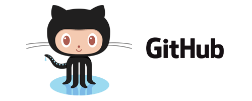
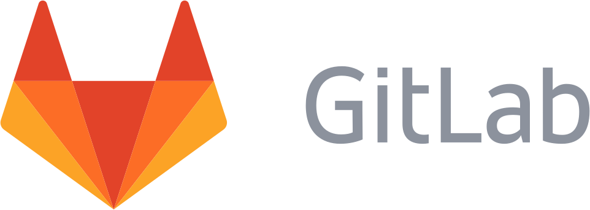

DevOps
Metodología de creación de software
DevOps

DevOps
- Automatización de tareas
- Preparación de entornos de desarrollo, pruebas y producción
- Provee herramientas para realizar despliegues a los entornos
- Gestiona las distintas configuraciones de los servidores
DevOps
Ventajas
- Se fabrica software más rápidamente
- Software es de mayor calidad
- Menor coste
- Frecuencia de despliegues muy alta
- Menos preocupaciones

Por donde empezar...
con qué herramientas...
Entornos de Desarrollo
Con Sistemas de Virtualización

Ventajas
- Misma configuración para todo el equipo
- Independiente del Sistema Operativo
- Semejante a los entornos de Test y Producción
- Facilita trabajar con distintos proyectos

Gestor de máquinas virtuales
Vagrant Box

Linux + Contenedores
Docker Store

Desarrollo Dirigido por Tests (TDD)
TDD

Sistema de Control de Versiones

Sistema de Control de Versiones


Plataformas de Desarrollo Colaborativo
 
Revisiones de Código

Pull Request
Integración Continua
Sistemas de Integración Continua
Jenkins
Codeship
Despliegue continuo
PaaS
Codeship + GIT
Soporte del producto
Zendesk
Comunicación
Email y Slack